plot()allows to quickly display a color scheme returned bycolour().plot_scheme()shows colors in a plot.plot_map()andplot_tiles()produce a diagnostic map for a given color scheme.plot_scheme_colorblind()shows colors in a plot with different types of simulated color blindness.
Usage
# S3 method for colour_scheme
plot(x, ...)
plot_scheme(x, colours = FALSE, names = FALSE, size = 1)
plot_map(x)
plot_tiles(x, n = 512)
plot_scheme_colourblind(x)
plot_scheme_colorblind(x)Arguments
- x
A
charactervector of colors.- ...
Currently not used.
- colours
A
logicalscalar: should the hexadecimal representation of the colors be displayed?- names
A
logicalscalar: should the name of the colors be displayed?- size
A
numericvalue giving the amount by which plotting text should be magnified relative to the default. Works the same ascexparameter ofgraphics::par().- n
An
integerspecifying the size of the grid (defaults to \(512\)).
Examples
plot(colour("bright")(7))
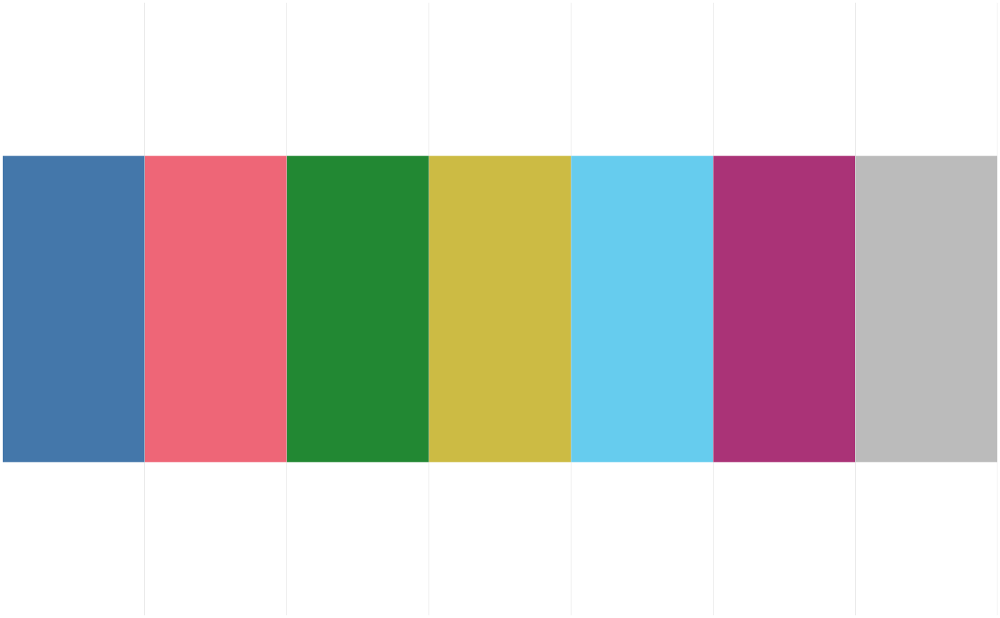
plot(colour("smooth rainbow")(256))
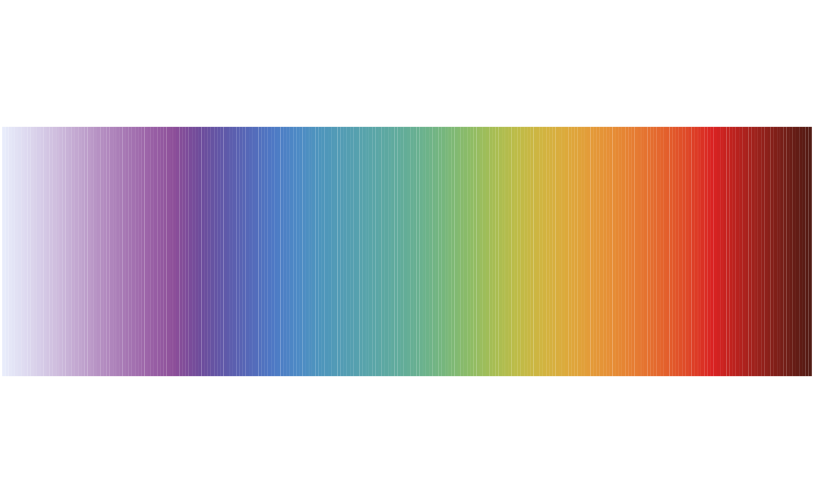
## Plot colour schemes
plot_scheme(colour("bright")(7))
 plot_scheme(colour("sunset")(11))
plot_scheme(colour("sunset")(11))
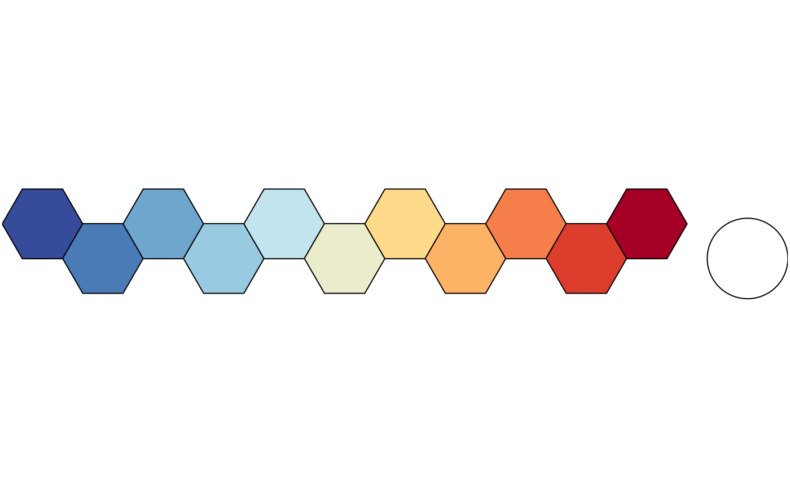
plot_scheme(colour("YlOrBr")(9))
 plot_scheme(colour("discrete rainbow")(14))
plot_scheme(colour("discrete rainbow")(14))
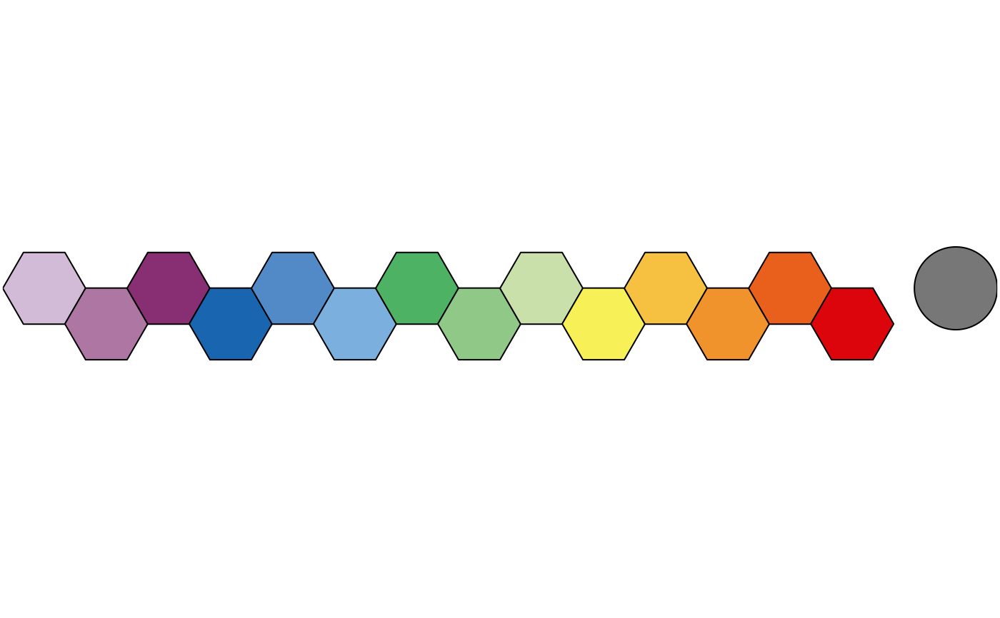
## Plot diagnostic maps
plot_map(colour("bright")(7))
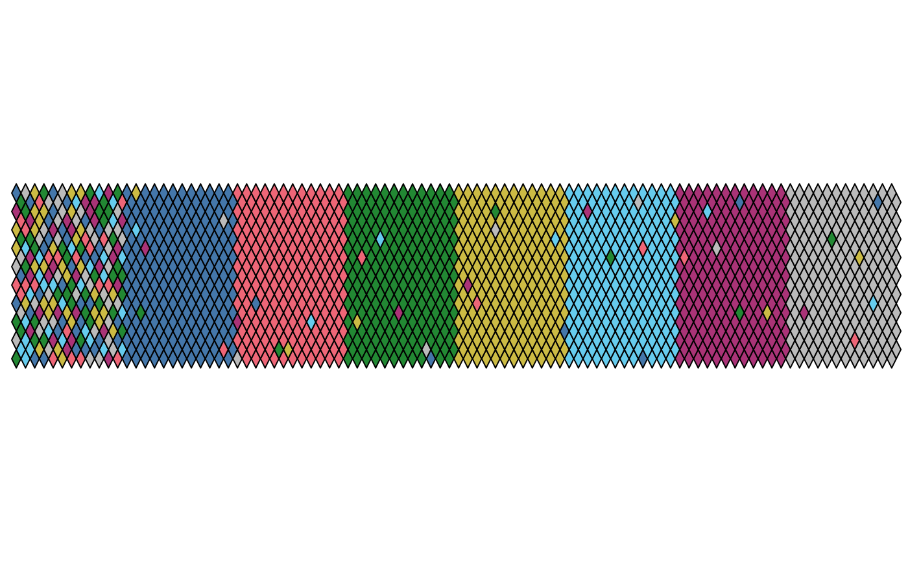
plot_map(colour("sunset")(11))
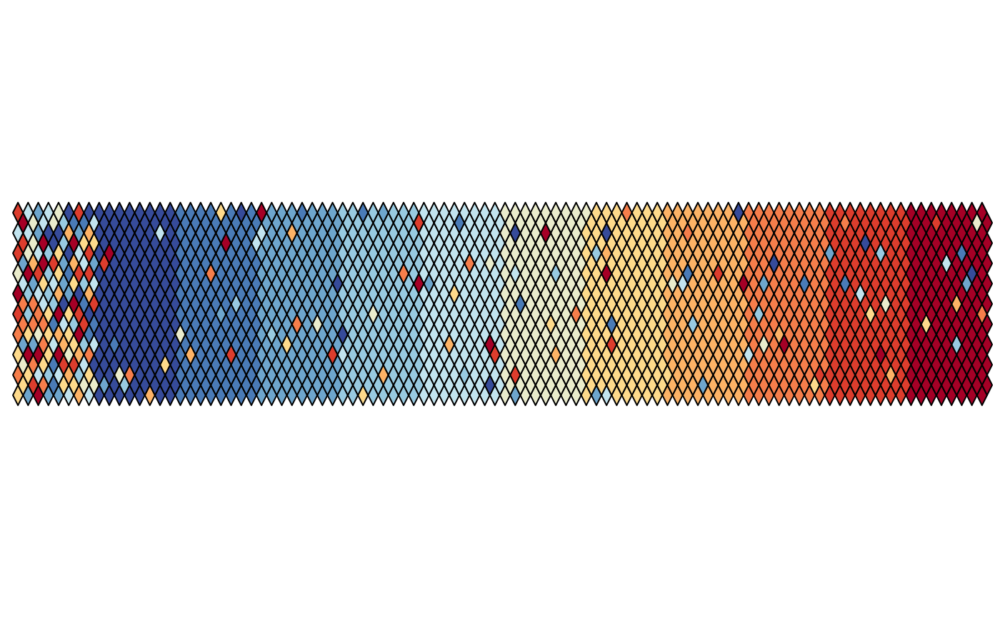
plot_map(colour("YlOrBr")(9))
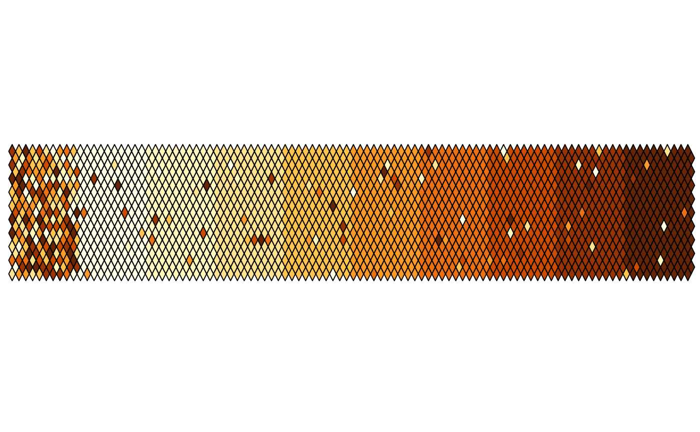
plot_map(colour("discrete rainbow")(14))
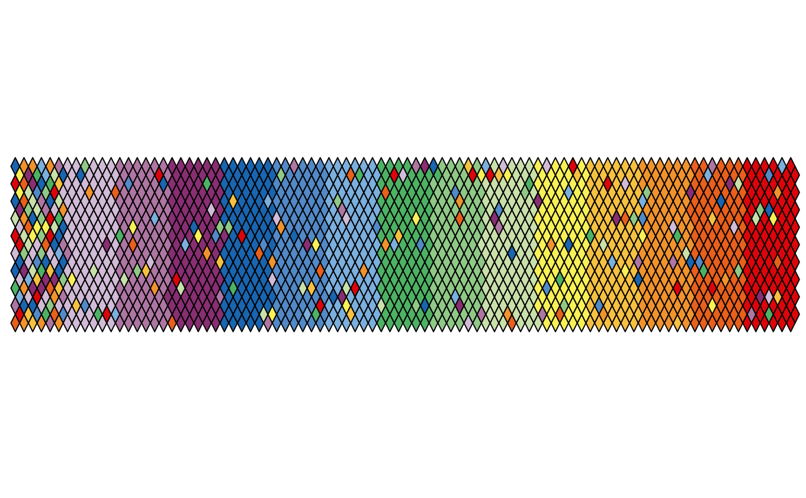
## Plot diagnostic images
plot_tiles(colour("discrete rainbow")(14), n = 256)
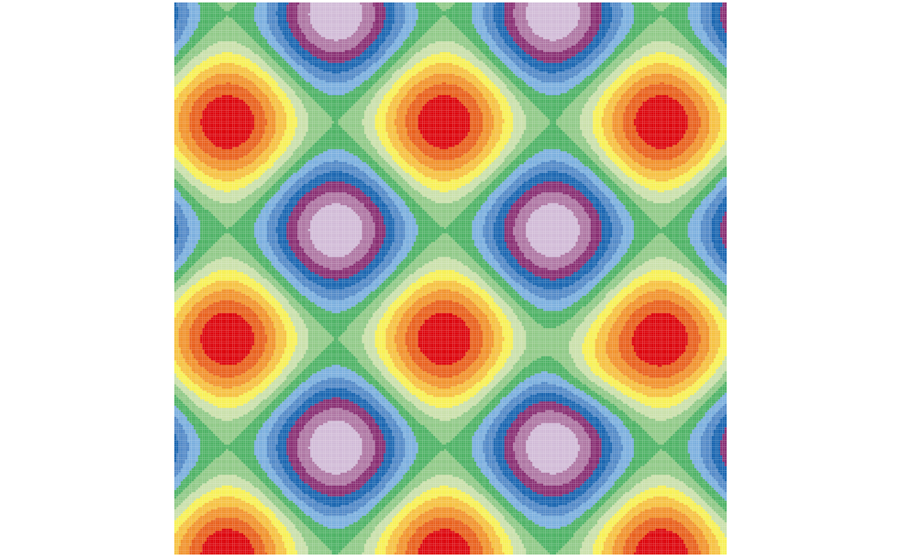
plot_tiles(colour("discrete rainbow")(23), n = 256)
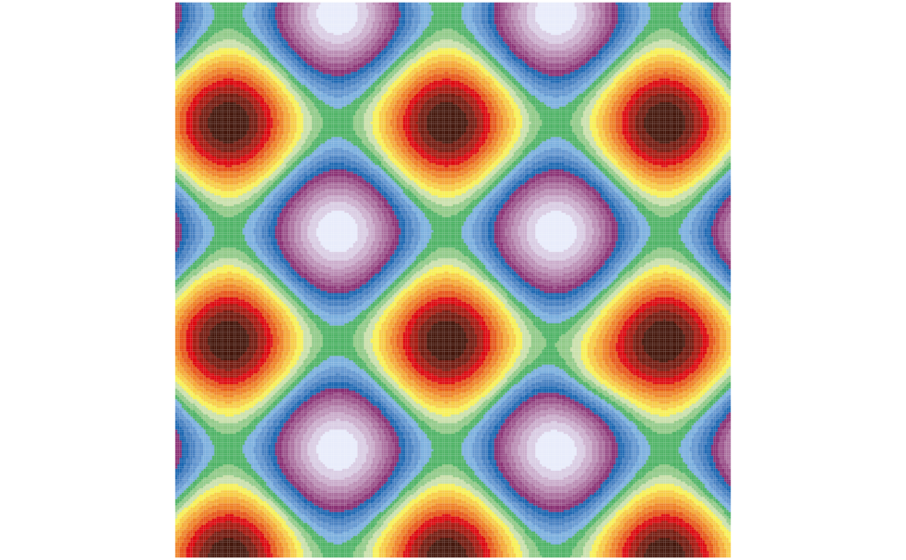
plot_tiles(colour("smooth rainbow")(256), n = 256)
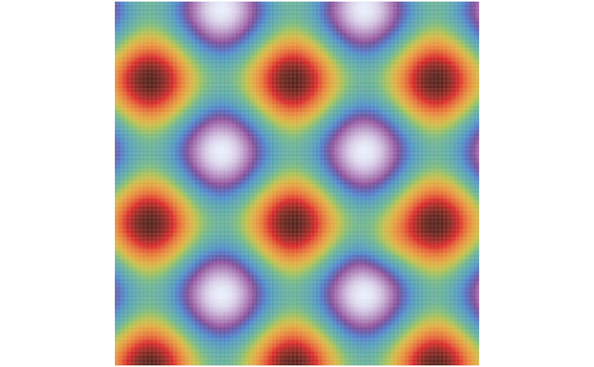
## Plot simulated color blindness
plot_scheme_colorblind(colour("bright")(7))